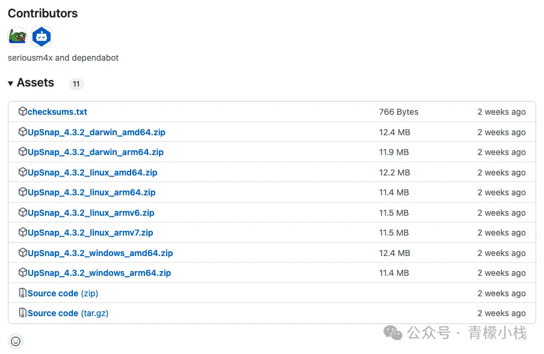
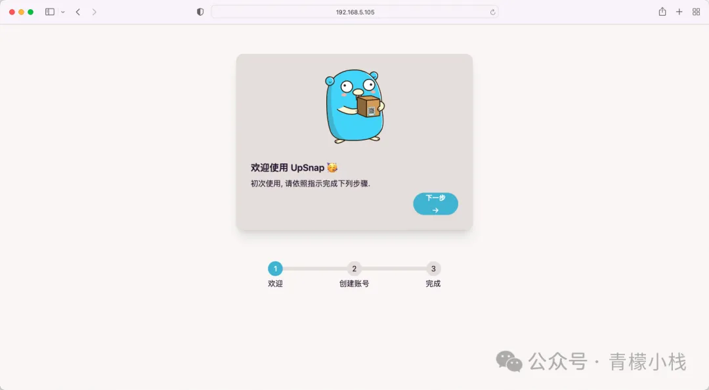
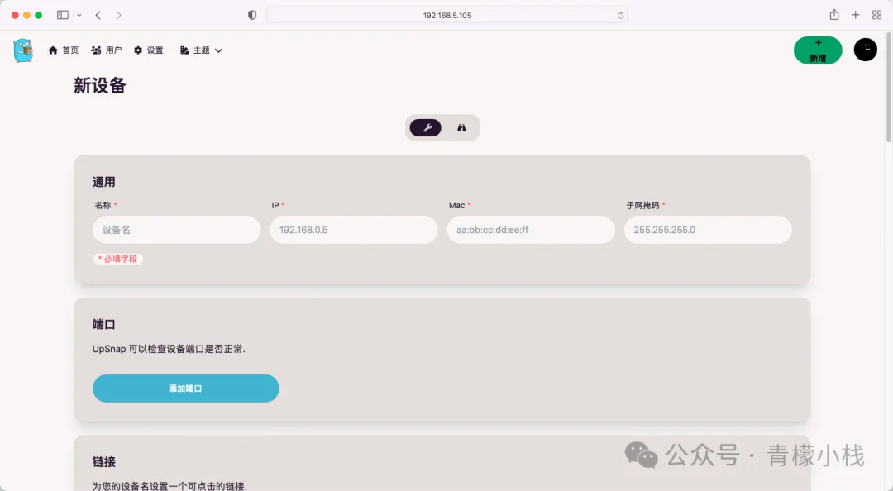
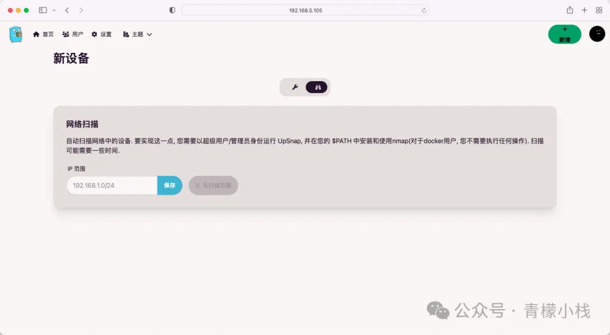

- 44 Motion One 一款神奇的 JavaScript 开源现代动画库
- 43 web 端预览 Office 文件的开源项目 vue-office
- 42 Typed.js 动态文本效果
- 41 前端高颜值展示 JSON 数据
- 40 Mock.js 前端生成模拟数据的库
- 39 linux 命令之 diff
- 38 实现 github 代码对比效果，并高亮显示差异
- 37 前端展示高颜值的 Excel，并支持预览、编辑
- 36 Glide.js 一款轻量级 JavaScript 开源轮播图工具库
- 35 现在前端组长都是这样做 Code Review
- 34 UpSnap 搭建一款开源且精美的网络唤醒服务
- 33 paint-board 趣味性艺术画板
- 32 noUiSlider 一款轻量级的 JavaScript 开源滑块库
- 31 granimjs 给网页背景、元素、文字添加交互式的渐变效果
- 30 Fingerprintjs 告别隐身，浏览器指纹识别技术
- 29 Dropzone 一款神奇的 JavaScript 开源文件拖拽上传库
- 28 Remix，一款神奇的 JavaScript 开源全栈框架
- 27 mo.js 动画库
- 26 fullPage.js 创建美丽的全屏滚动网站
- 25 以编程方式制作视频的 React 框架 Remotion
- 24 Hammer.js 开源多点触摸手势库
- 23 Gridstack.js Js 开源网格布局库
- 22 Tesseract.js 神奇的前端 OCR 库
- 21 浏览器指纹 fingerprintjs2
- 20 es-toolkit 最先进的JavaScript工具库
- 19 Chroma.js 神奇的 JavaScript 颜色处理和可视化库
- 18 Reveal.js 一款神奇的 JavaScript 开源演示框架
- 17 React Email 前端炫酷写邮件
- 16 NProgress.js 页面进度条
- 15 Paper.js 一款神奇的 JavaScript 开源矢量图库
- 14 基于 Tensorflow.js 在浏览器实现图像识别
- 13 前端实现人类动作捕捉
- 12 前端图片压缩 js-image-compressor
- 11 前端 js 动画库
- 10 Rxjs 强大的异步编程解决方案
- 09 OpenCV 前端图片磨皮处理
- 08 js 运算精度丢失，用这个库试试
- 07 探索 Svelte.js
- 06 前端数据可视化常用工具大盘点
- 05 Slidev 新一代幻灯片制作工具
- 04 Masonry.js 轻松实现瀑布流
- 03 Intro.js 神奇用户引导库
- 02 Fuse.js 轻量高效的模糊搜索库
- 01 12 个 JS 动画库
UpSnap 搭建一款开源且精美的网络唤醒服务
HaoTian · 2024-10-03 21:49:11
项目介绍
UpSnap是在 Github 中开源的一个局域网唤醒工具，它使用 SvelteKit、Go、PocketBase 和 nmap 编写，可以通过网络唤醒局域网内的设备。UpSnap 的主要作用是允许用户通过网络发送特定的数据包（称为“魔法包”）来启动处于休眠或关机状态的计算机或其他设备，这项技术通常被用于系统管理、远程访问和各种自动化场景中。
主要功能
- 一键设备唤醒仪表盘：用户可以通过简单的界面唤醒设备。
- 定时事件自动化：支持通过 Cron 任务设置自动化操作。
- 端口扫描：可以选择性扫描网络端口。
- 设备发现：支持网络扫描（需要 nmap）。
- 用户管理：提供安全的用户管理功能。
- 国际化支持：支持多语言。
- 丰富的主题：提供 29 种主题选择。
- Docker 支持：提供适用于多种架构的 Docker 镜像，包括 amd64、arm64、arm/v7、arm/v6。
- 自托管：支持自行托管部署。
项目地址

搭建教程
二进制部署
根据自身的系统架构，可前往 Github 中的开源仓库 releases 中下载对应架构的软件包：

Linux 用户可参考以下命令运行：
# 在 8090 端口启动web服务
sudo ./upsnap serve --http=0.0.0.0:8090
Windows 用户则需要打开终端，并在软件根目录下执行命令启动：
upsnap.exe serve --http=0.0.0.0:8090
使用 Docker 部署
使用 docker 运行服务的服务能够脱离平台的限制，可以快速运行在群晖、极空间等各种 NAS 服务之间：
docker run -d \
--restart unless-stopped \
--network host \
--name upsnap \
-v /path/to/your/data:/app/pb_data \
ghcr.io/seriousm4x/upsnap:latest
在 NAS 中运行，例如群晖上更推荐使用 docker compose 的方式：
services:
upsnap:
container_name: upsnap
image: ghcr.io/seriousm4x/upsnap:4 # images are also available on docker hub: seriousm4x/upsnap:4
network_mode: host
restart: unless-stopped
volumes:
- ./data:/app/pb_data
访问配置
搭建完成后，通过访问 IP+8090 端口访问网络唤醒服务，并根据提示进行配置：
初始化完成后，在首页添加我们需要远程唤醒的局域网内的设备：
除了手动配置，还支持扫码内网指定网段内的设备进行快速添加：
